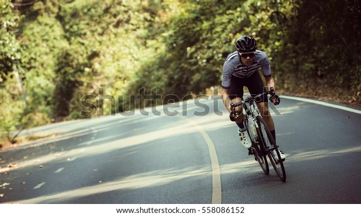

Keeping fit and healthy — but not getting injured. 3 years ago I was significantly overweight (96kg — now 81), I ran for exercise but regularly got injured. I didn’t live a very healthy life and was also diagnosed with a long term chronic health condition…. Something had to change. After being invited out on a ride with a local mate I realised how unfit and unhealthy I had become the moment we hit an incline and I was struggling. But I enjoyed being out! I love the outdoors — its a fast time efficient way to get out of London and slow down everything down. I grew up in the middle of nowhere and cycling is the only way I can reconnect with that peaceful feeling of solitude and being away from the crowds and pace of London. Sometimes just love riding alone. It’s a great time to reflect, think — and slow things down. State of mind: mental health, wellbeing — it is all the rage these days. Coming from a pretty old fashioned background it took me a long time to realise that what gets you down does not make you stronger. Better understanding my own vulnerability, my tendency to get anxious and angry is something I still wrestle with. Pushing it up hills on the bike gets rid of all that. It is not a solution but it helps. Being on the bike is like being in my castle — if only I really had one! 